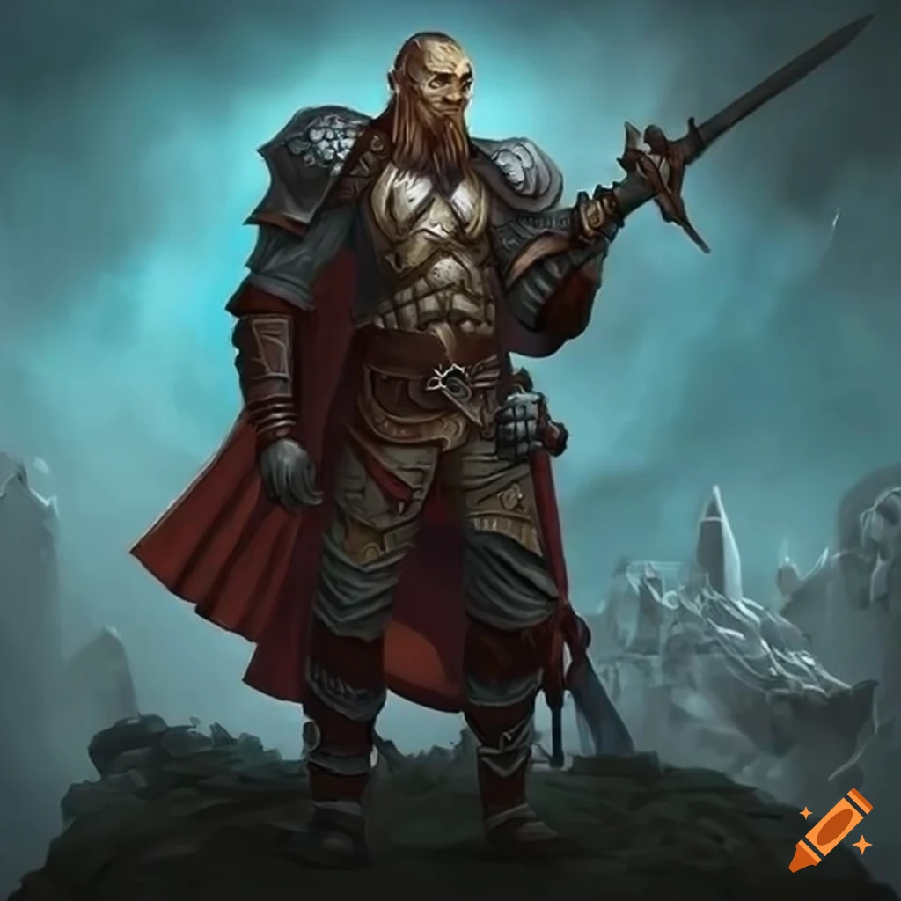
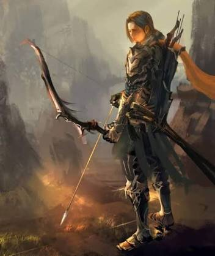
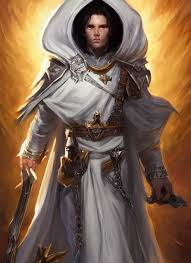
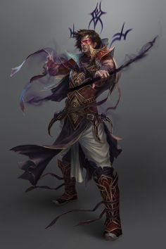

Guerreiro
Guerreiros são combatentes experientes e implacáveis, mestres em esmagar seus inimigos com força bruta e precisão mortal. Equipados com armaduras pesadas e empunhando armas mortais, eles formam a espinha dorsal de qualquer grupo de aventureiros, protegendo seus aliados enquanto dizimam seus oponentes.
Arqueiro
O arqueiro é um mestre do combate à distância, abatendo seus inimigos com precisão mortal de longe. Treinado para a perfeição no manejo do arco e flecha, o arqueiro é capaz de disparar rajadas de projéteis com letalidade devastadora.
Curandeiro
Em meio ao caos da batalha, o curandeiro surge como um farol de esperança, utilizando seus conhecimentos e poderes para restaurar a saúde dos feridos e salvar vidas. Através de magias, ervas medicinais e técnicas ancestrais, ele protege seus aliados e garante a continuidade da luta.
Feiticeiro
Um feiticeiro é um canalizador de poder arcano, capaz de conjurar magias devastadoras e manipular as forças da realidade com maestria. Imbuído de um talento inato para a magia, o feiticeiro molda a energia arcana para criar efeitos poderosos que alteram o curso da batalha e redefinem as leis da natureza.
